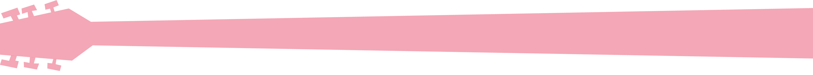
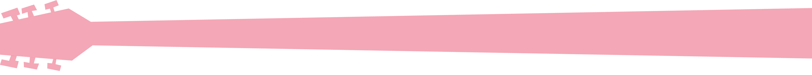
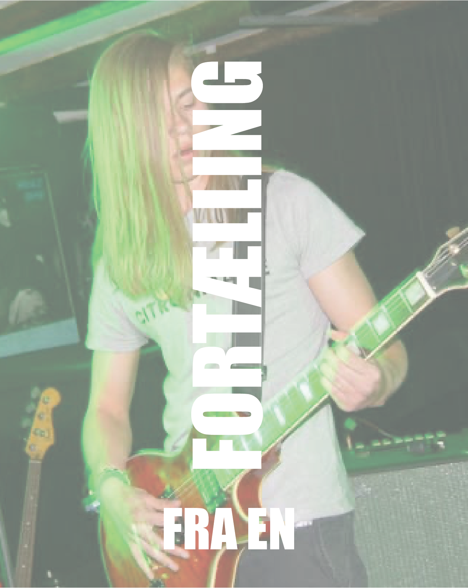
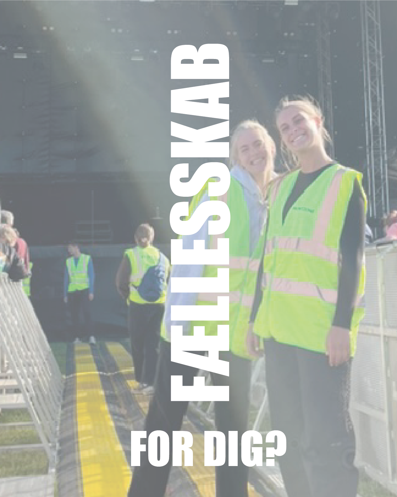
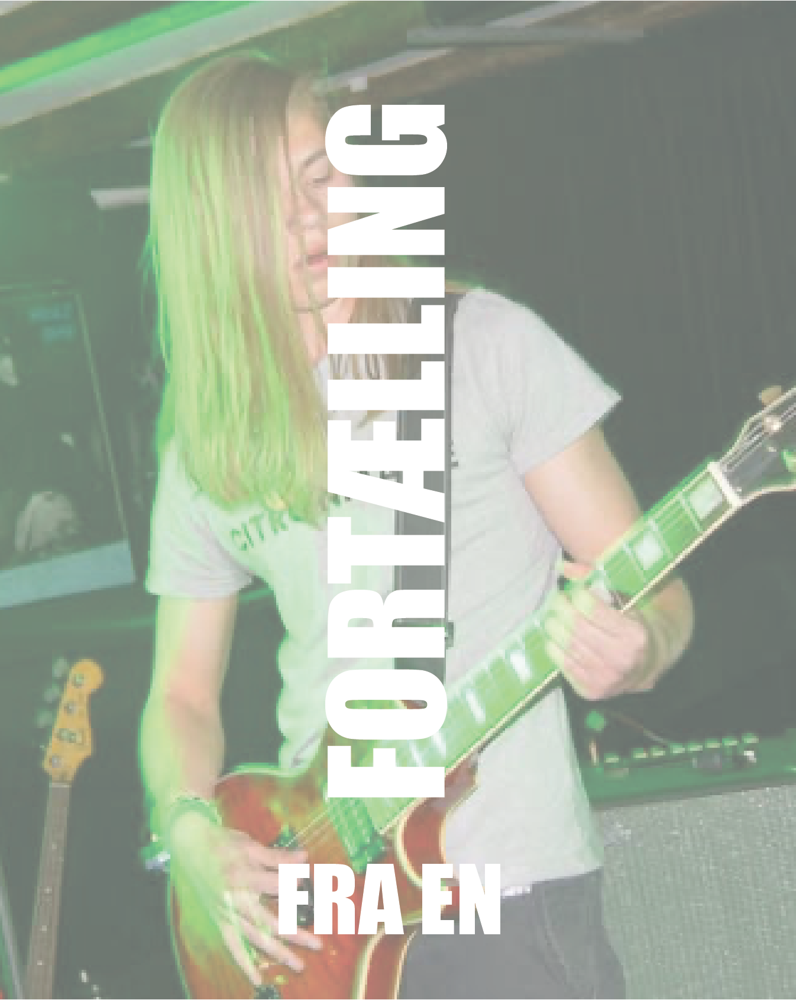
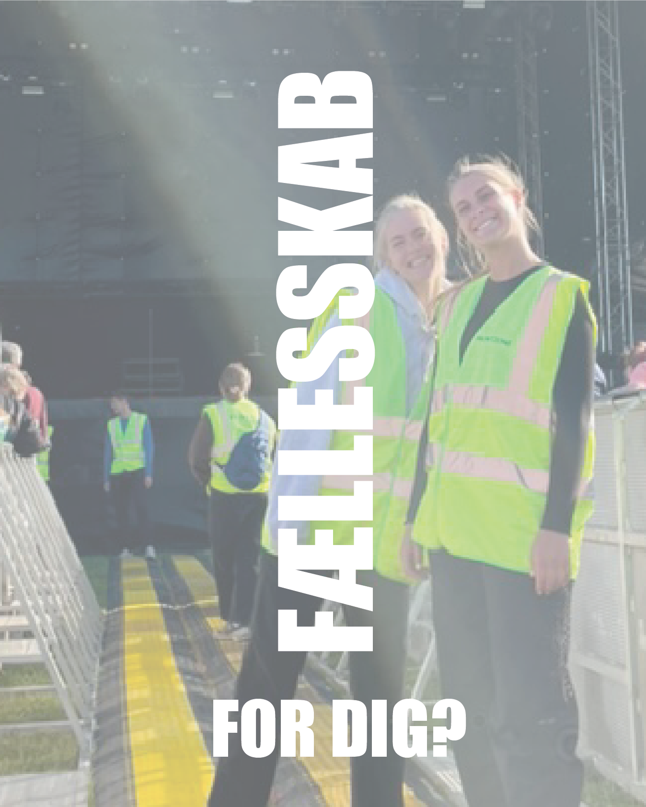

 



FORTID
Radar har en lang og stolt historie som en central del af Aarhus’ musikscene. Før vi blev kendt som Radar, lå vi i Mejlgade 53 under navnet Musikcaféen. Siden 1978 har vi været et sted, hvor musikere kunne udfolde sig, og hvor ny musik fik plads til at vokse. Dengang var vi en amatørscene, men med tiden udviklede vi os til en professionel platform for både upcoming kunstnere og etablerede navne. I 2011 tog vi et stort skridt fremad ved at flytte til Godsbanen og skifte navn til Radar. Denne flytning gav os mere plads og et mere moderne udtryk, der matcher vores ambitioner om at være et ledende regionalt spillested. Trods forandringerne har vi bevaret vores kerne: at udvikle og præsentere ny musik og støtte nye kunstnere på vej mod deres gennembrud. Radar har haft en betydelig rolle i at introducere musikalske tendenser til Aarhus. Mange store musiknavne tog deres første skridt på vores scene, og vi er stolte af at have bidraget til deres musikalske karriere. Siden 2001 har Radar været en del af Danmarks 19 regionale spillesteder og har modtaget støtte fra Aarhus Kommune og Statens Kunstfond. Denne støtte har været afgørende for at sikre, at vi fortsat kan præsentere en bred vifte af koncerter, støtte eksperimenterende kunstnere og tilbyde unikke musikoplevelser til vores publikum.
FREMTID
Som det ser ud nu, står Radar over for en usikker fremtid. Fra 2025 mister vi vores bevilling som regionalt spillested, og vi har derfor brug for din hjælp til at holde musikken og fællesskabet i live. Heldigvis er der mange måder, hvorpå du kan gøre en forskel! Du kan læse om de vigtigste initiativer på vores community-side, hvor vi deler, hvordan vi sammen kan skabe en fremtid for niche musik og unikke kulturelle oplevelser. Men der er også noget enkelt, du kan gøre lige nu. Del dine oplevelser på sociale medier som Instagram, Facebook eller TikTok – upload billeder fra dine besøg & brug hashtagget #RadarLive. Dit bidrag kan inspirere flere til at opdage, hvad Radar har at tilbyde, og måske endda blive en del af vores fællesskab. Hver eneste deling, besøg og støtte tæller. Tak fordi du er med til at gøre en forskel for Radar og vores mange passionerede gæster. Sammen kan vi sikre, at musikken og fællesskabet fortsætter!